Activities
本事業は、心に響く音楽を通じて震災復興の街づくり・人づくりを目指します。
年齢層を考慮した選曲（教科書掲載曲や童謡を含む）で、参加者全員が楽しめるコンサートを実施。 4月～12月に県内全域および県外の教育機関・福祉施設での公演を予定しています。
震災後、3年間で250施設（幼稚園、保育所、小中学校、養護学校、老人ホーム等）で音楽鑑賞会を実施。 約30,000人の子どもたちからお手紙をいただきました。
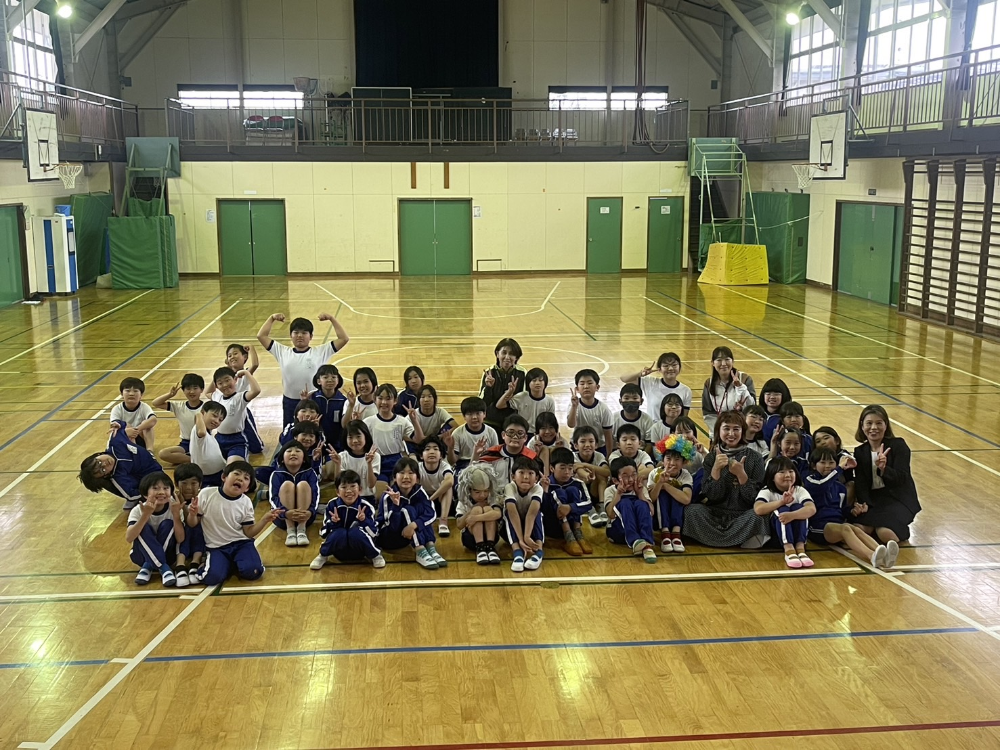
幼稚園から高校まで、また老人ホームなど福祉施設で年間50回以上のコンサートを実施しています。
公益社団法人東日本大震災復興財団の支援による声楽指導プログラム。才能ある若い歌手の発掘を行っています。
ベラルーシの子どもたちとの文化交流プログラム。2014年・2015年に福島の子どもたちを引率しました。
JFN全国38局放送「サードプレイス」出演など、活動がメディアでも取り上げられています。
「魂に響くギフトコンサート」事業は、地域づくりのための助成金のみでは多くの学校や介護施設を訪問することが難しい状況です。 事業の趣旨にご賛同いただける方々を広く募りたく思います。
協賛金：一口 1,000円より
お問い合わせはこちらNews
お米と発酵café&shop 「nda焙」ネット販売開始
ウェブサイトを更新しました
18ヶ月ぶりに学校での声楽指導を再開。2022年2月まで郡山市内40会場で実施。 コロナ禍でのマスク生活により、子どもたちの呼吸が浅くなり、声が出にくくなっている状況を確認。
福魂祭で300名の子どもたちとコラボレーション演奏を実現。2ヶ月間一生懸命練習し、素晴らしい合唱となりました。
ギャラリー2017にNGB99物語を掲載
NGB99が郡山市成人式（3,000名参加）でパフォーマンスを披露。福島県内3局のテレビ、新聞で報道。
0歳・1歳児向け親子クリスマスコンサートを開催
NGB99デビュー
福島の子どもたち16名をベラルーシに引率。現地でコンサートと文化交流を実施。
JFN「サードプレイス」（全国38局）にラジオ出演
Gallery
2013年から現在までの活動記録をご覧いただけます。
18ヶ月ぶりに学校での声楽指導を再開。2022年2月までに郡山市内40会場で実施。 コロナ禍でのマスク生活により、子どもたちの呼吸が浅くなっている状況を確認しました。
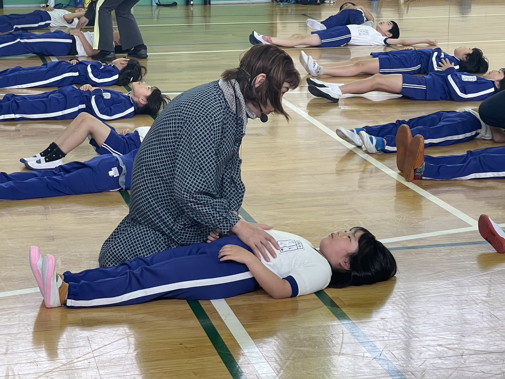
福魂祭で300名の子どもたちとコラボレーション演奏を実現。 復興財団支援による声楽指導プログラム「奇跡のレッスン」も継続。
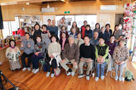
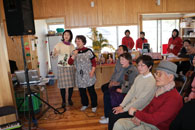
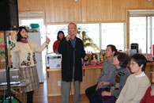
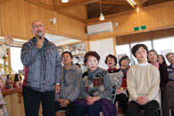
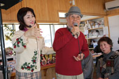
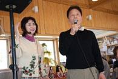
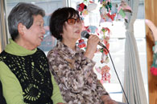
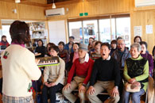
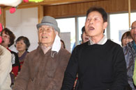
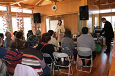
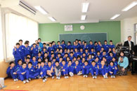
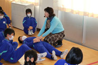
復興財団支援による「奇跡のレッスン」声楽指導プログラムを継続。 NGB99の活動も継続し、地域活性化に貢献しました。
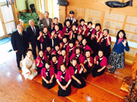
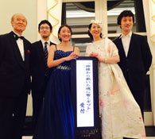
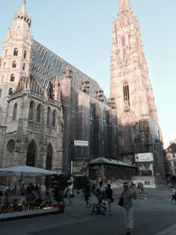
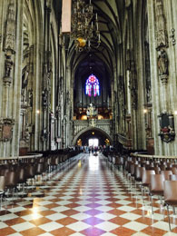
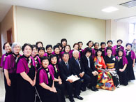
西田町のおばあちゃんたちによるアイドルグループ「NGB99」が誕生。 2017年1月8日、郡山市成人式（3,000名参加）でパフォーマンスを披露しました。
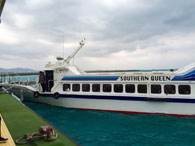
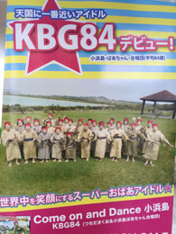
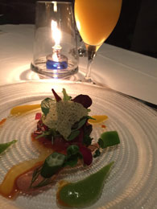
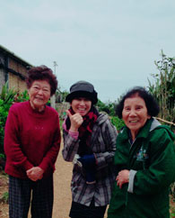
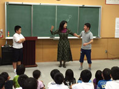
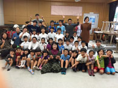
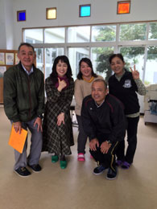
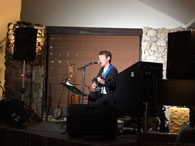
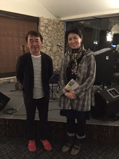
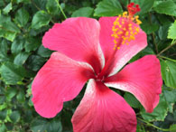
0歳・1歳児向け親子クリスマスコンサート開催。本宮市復興祭でのコラボレーション。 奈良ホテルでのディナーコンサートでは福島県食材を使用。
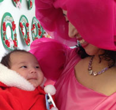
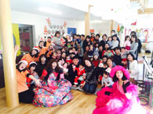
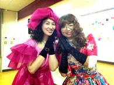
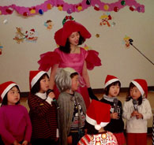
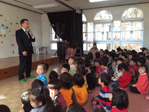
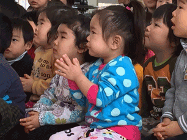
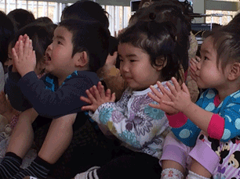
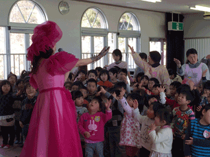
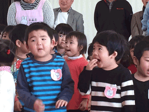
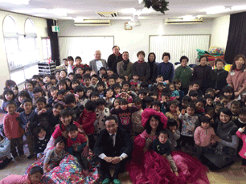
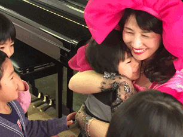
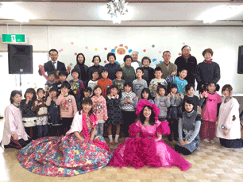
7月31日～8月10日、福島の子どもたち16名をベラルーシに引率。 現地でコンサートと文化交流を実施。国内でも多数の学校・施設で公演。
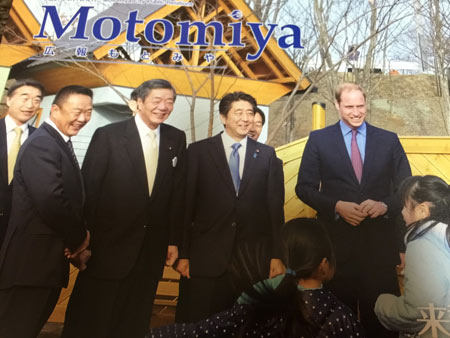
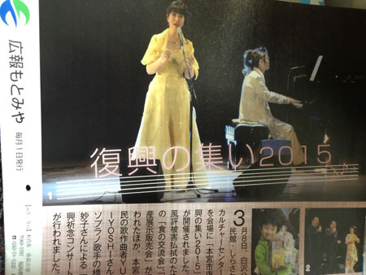
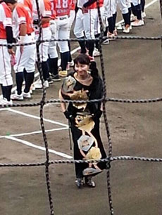
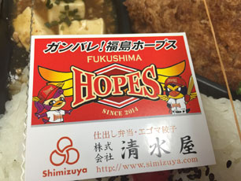
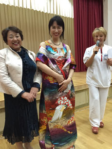
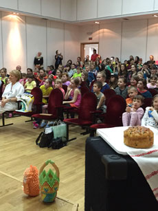
8月にベラルーシへ子どもたち16名を引率。国内テレビ出演。 秋には50校の学校訪問コンサートを実施。
震災後2年、本格的な活動を開始。台湾でのコンサート、仙台での公演なども実施。
震災前から震災後にかけて、福島県内外で実施したコンサートの記録。 Grand Hyatt Tokyo、奈良、静岡、広島、兵庫、和歌山、大阪など各地で公演。
活動が新聞で取り上げられた記事の一覧。2010年4月から2014年3月まで31件以上の掲載。
Special Project
天国にいちばん近いアイドル
西田町のおばあちゃんアイドルグループ
2016年1月、沖縄県小浜島を訪問した際に出会った84歳のアイドル・知念さんとの出会いがきっかけでした。 「西田町にもおばあちゃんアイドルを作ろう」という思いから、NGB99が誕生しました。
作曲は東京在住の対馬敏夫氏、振り付け・マナー指導は須賀川市の前崎順子先生。 2016年11月にデビューし、2017年1月8日には郡山市成人式（3,000名参加）でパフォーマンスを披露。 福島県内3局のテレビと新聞で報道されました。
沖縄県小浜島訪問、知念さんとの出会い
対馬敏夫氏に作曲依頼
デビュー曲完成
歌詞完成（5日間で執筆）
NGB99デビュー
郡山市成人式で披露（3,000名参加）
Video
コンサートやイベントの様子を動画でご覧いただけます。
Customer Voice
震災後、3年間で250施設で音楽鑑賞会を実施し、
約30,000人の子どもたちからお手紙やイラストをいただきました。
子どもたちの想いが詰まった作品の一部をご紹介します。
Profile
おんがくの杜を支えるメンバーをご紹介します。
代表
震災後、3年間で250施設（幼稚園、保育所、小中学校、養護学校、老人ホーム等）で音楽鑑賞会を実施。 約30,000人の子どもたちからの手紙60通を基に、詩人・和合亮一氏と共に詩を作成。 作曲はYUKIYOSHI氏が担当。 音楽の力を通じて、震災後の心身の疲弊に対する癒しを提供し、 「うつくしまふくしま」にふさわしいまちづくりと人づくりを目指しています。
ヴァイオリン
東京藝術大学卒業。読売交響楽団勤務経歴あり。 現職は東邦音楽大学・同短期大学准教授。 小田原ジュニア弦楽合奏団団長。小田原音楽連盟会長。
ピアノ
武蔵野音楽大学卒業。福井直秋記念奨学金受賞。 ピティナ・ピアノコンペティション全国決勝大会出場。 ドイツハンブルク国際音楽講習会参加。大学卒業後ドイツで研鑽。
バンド
全員が学校教職員。15年前の児童謝恩会で結成。週1回練習活動を継続。 メンバー：大塚久（Vo&Gt）、丹内庄元（Gt）、小松健二（Ba）、熊田勝市（Dr）、伊藤春奈（Key）
音響
有限会社成田屋代表。大学時代からPA業務に従事。 松任谷由美、カシオペアなど著名アーティストのコンサート経験。 FM本宮「FMモットコム」番組パーソナリティー。
Contact
コンサートのご依頼・協賛のお申し込みなど、お気軽にお問い合わせください。